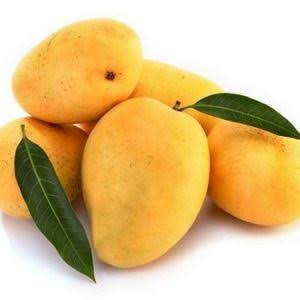

Mango, Mangifera indica, is an evergreen tree in the family Anacardiaceae grown for its edible fruit. The mango tree is erect and branching with a thick trunk and broad, rounded canopy. The leaves of the tree are are shiny and dark green. They are either elliptical or lanceolate with long petioles and a leathery texture. The tree produces dense clusters of flowers with cream-pink petals on branched panicles. The mango fruit is roughly oval in shape, with uneven sides. The fruit is a drupe, with an outer flesh surrounding a stone. The flesh is soft and bright yellow-orange in color. The skin of the fruit is yellow-green to red. Mango trees can grow to a height of 45 m (148 ft) and can live for in excess of 100 years. Mango is believed to originate from India or Burma (Myanmar)The tree is evergreen, often reaching 15–18 metres (50–60 feet) in height and attaining great age. The simple leaves are lanceolate, up to 30 cm (12 inches) long. The flowers—small, pinkish, and fragrant—are borne in large terminal panicles (loose clusters). Some have both stamens and pistils, while others have stamens only. The fruit varies greatly in size and character. Its form is oval, round, heart-shaped, kidney-shaped, or long and slender. The smallest mangoes are no larger than plums, while others may weigh 1.8 to 2.3 kg (4 to 5 pounds). Some varieties are vividly coloured with shades of red and yellow, while others are dull green. The single large seed is flattened, and the flesh that surrounds it is yellow to orange in colour, juicy, and of distinctive sweet-spicy flavour..